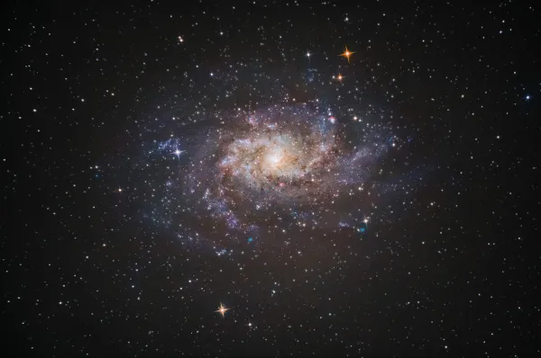

Galáxia
As galáxias são conjuntos de estrelas, poeira, gases e matéria escura que formam o Universo. Elas podem ser elípticas, espirais, como a Via Láctea, ou possuir forma irregular.
Título 1
Título 2

Galáxia do Triângulo ou Messier 33.
As galáxias são sistemas formados por milhares a trilhões de estrelas, poeira, gases e matéria escura. Sua classificação e identificação pode ocorrer de acordo com a forma, sendo assim elípticas, espirais ou irregulares (quando não possuem um contorno definido). A Via Láctea Via Láctea, galáxia em que vivemos, é uma das maiores da região do Universo conhecida como Grupo Local e segue em processo de evolução, o que ocasionará a sua colisão com a galáxia de Andrômeda"
Tópicos deste artigo
- Resumo sobre as galáxias
- O que é galáxia?
- Tipos de galáxia
- Quais são as principais galáxias?
- Formação de uma galáxia
- Evolução da galáxia
Resumo sobre as galáxias
- Galáxias são sistemas ou conjuntos compostos por estrelas, gases, poeira e matéria escura.
- A maioria das grandes galáxias possui buracos negros no seu centro.
- Elas são definidas de acordo com a sua forma, podendo ser espirais, elípticas ou irregulares.
- Entre as principais galáxias, temos a Via Láctea, na qual vivemos, Andrômeda, Galáxia do Triângulo e Nuvem de Magalhães
- As galáxias evoluem com o passar do tempo, podendo interagir e até mesmo se fundirem."